.png)
- Main
- Emirates
- Activities
- Travel Guide
Emirates
Dubai
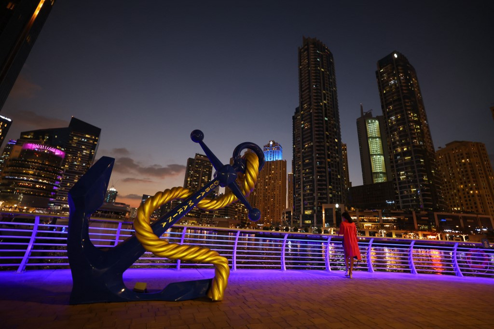Dubai is described as opulent, elegant, and forward-thinking. This city in the United Arab Emirates is a luxurious vacation spot for both leisure and business guests. Dubai is a modern metropolis with an Arabian flair and a timeless sense.
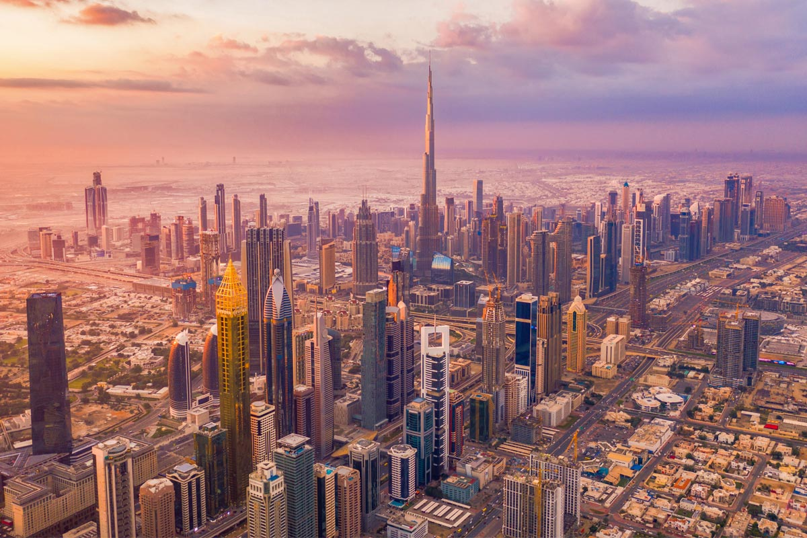Abu Dhabi
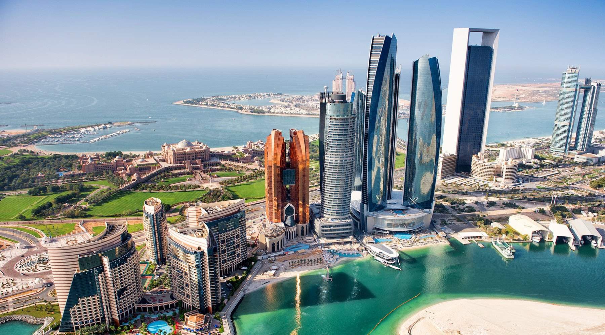This booming archipelago combines a rich history with magnificent high-rises, breathtaking scenery, and a thriving high-end lifestyle. Some of the best things the UAE has to offer may be found right here in Abu Dhabi when translated from Arabic means “land of gazelle”, is the largest Emirate in the UAE. It occupies 85% of the total land and its area is roughly more than 67,000 km.
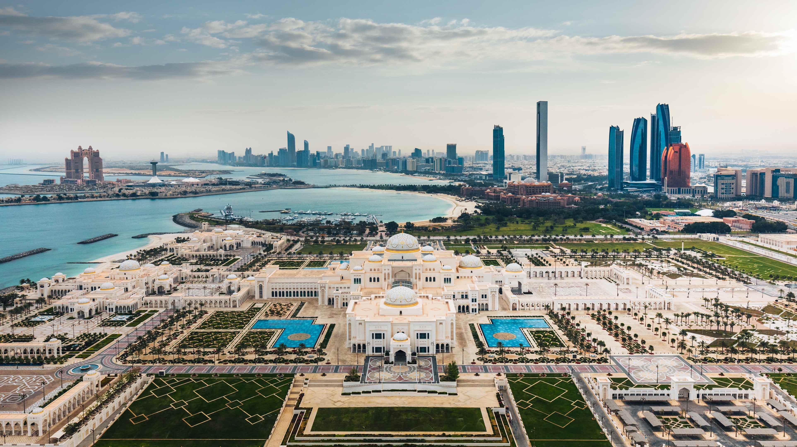Ajman
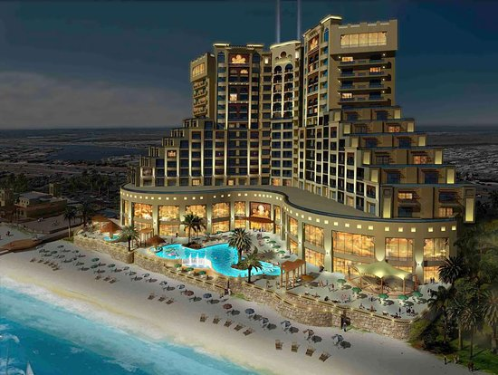Ajman, the smallest of the UAE's seven emirates, has its fair share of outstanding natural beauty and centuries-old traditions. Ajman's scenery, which is bordered on one side by the Arabian Gulf and on the other by the Hajar Mountains, offers several clean beaches and a variety of activities for visitors. The emirate deftly juggles its traditions with modernized, up-to-date services and urban development that is in line with the UAE Vision 2050.
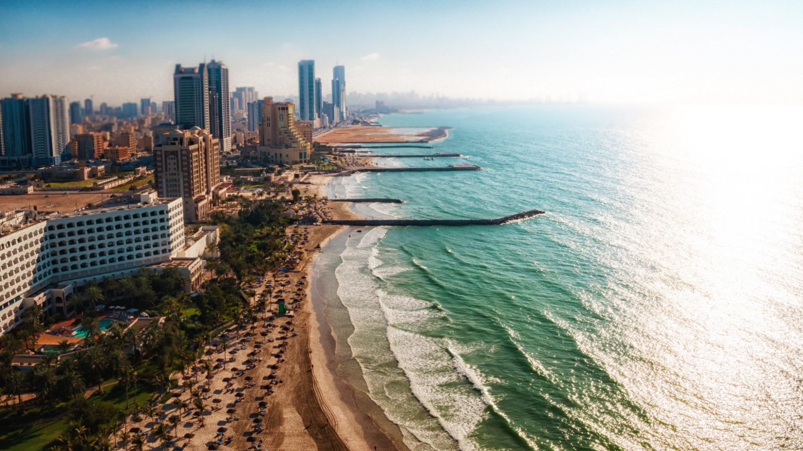Fujairah
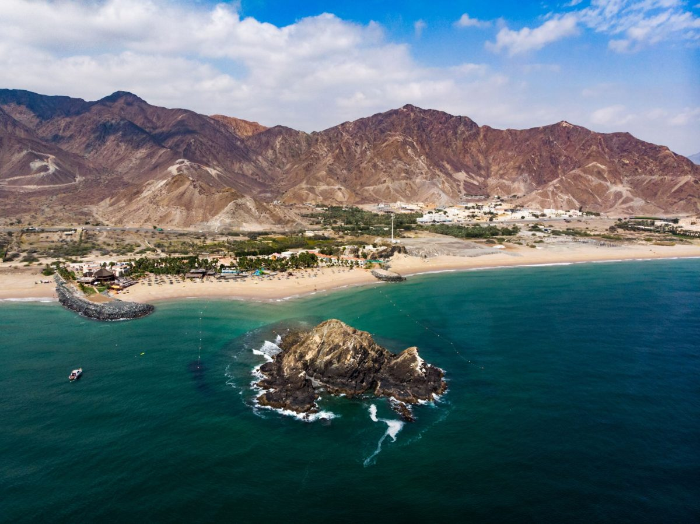Fujairah, the last of the UAE's seven emirates, is the most hilly and quiet of them all. The emirate of Fujairah, situated on the UAE's eastern coast, is known for its natural beauty and tranquility. While all of the emirates feature beaches, Fujairah's beaches stand out for snorkeling, scuba diving, and even surfing!
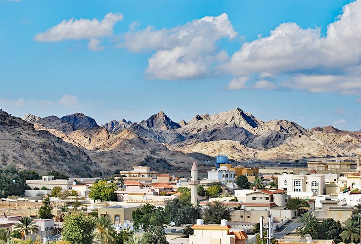Rasalkhaima
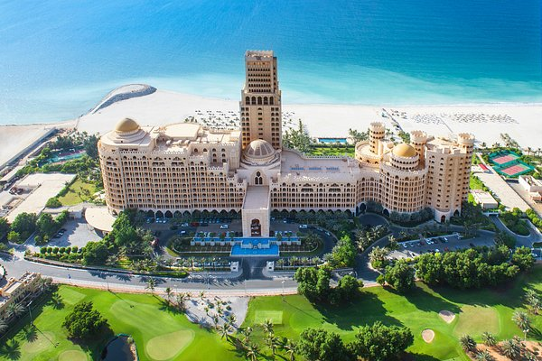Ras Al Khaimah is the UAE's most northern emirate, whose name means "top of the tent" in Arabic. It is also the country's fourth largest city. The emirate has three major ports, which give it significant strategic and economic significance. Ras Al Khaimah is a rocky and mountainous region that has plenty of adventure and outdoor sports!

Umm Al Quwain
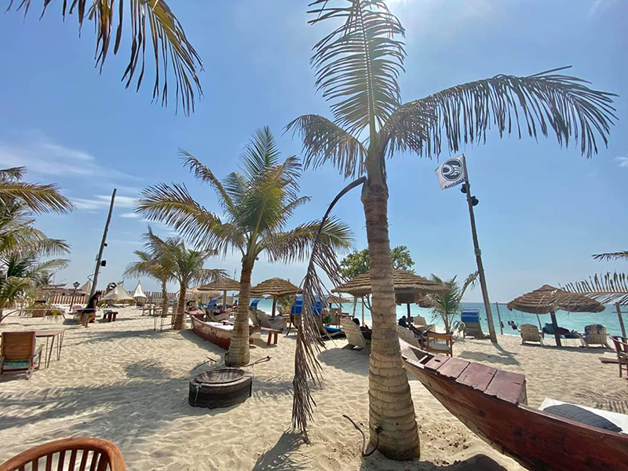Umm Al Quwain may be the smallest emirate in terms of population, but it wins the race when it comes to undiscovered locations and natural wonders. Umm Al Quwain has a long history, reaching back to the Stone Age, and is home to Ed-Dur, one of the UAE's most important archaeological sites. The vast majority of this emirate is unknown, but it attracts anglers from all around the country. Some of the best deep-sea fishing spots may be found off the coast of Umm Al Quwain. Aside from that, the emirate has a lot more to offer.
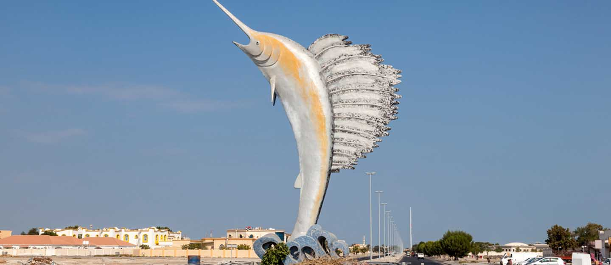"
An easy life does not make men, or does it build nations. Challenges make men, and it is these men who build nations

Mohammed Bin Rashed AL Maktoum
Prime Minister of the United Arab Emirates